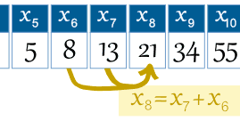
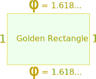

Fibonacci Sequence
The Fibonacci Sequence is the series of numbers:
0, 1, 1, 2, 3, 5, 8, 13, 21, 34, ...
The next number is found by adding up the two numbers before it:
- the 2 is found by adding the two numbers before it (1+1),
- the 3 is found by adding the two numbers before it (1+2),
- the 5 is (2+3),
- and so on!
Example: the next number in the sequence above is 21+34 = 55
It is that simple!
Here is a longer list:
0, 1, 1, 2, 3, 5, 8, 13, 21, 34, 55, 89, 144, 233, 377, 610, 987, 1597, 2584, 4181, 6765, 10946, 17711, 28657, 46368, 75025, 121393, 196418, 317811, ...
Can you figure out the next few numbers?
Makes A Spiral
When we make squares with those widths, we get a nice spiral:

Do you see how the squares fit neatly together?
For example 5 and 8 make 13, 8 and 13 make 21, and so on.

This spiral is found in nature!
See: Nature, The Golden Ratio,
and Fibonacci
The Rule
The Fibonacci Sequence can be written as a "Rule" (see Sequences and Series).
First, the terms are numbered from 0 onwards like this:
| n = | 0 | 1 | 2 | 3 | 4 | 5 | 6 | 7 | 8 | 9 | 10 | 11 | 12 | 13 | 14 | ... |
| xn = | 0 | 1 | 1 | 2 | 3 | 5 | 8 | 13 | 21 | 34 | 55 | 89 | 144 | 233 | 377 | ... |
So term number 6 is called x6 (which equals 8).
|
Example: the 8th term is
|
 |
So we can write the rule:
The Rule is xn = xn−1 + xn−2
where:
- xn is term number "n"
- xn−1 is the previous term (n−1)
- xn−2 is the term before that (n−2)
Example: term 9 is calculated like this:
Golden Ratio

And here is a surprise. When we take any two successive (one after the other) Fibonacci Numbers, their ratio is very close to the Golden Ratio "φ" which is approximately 1.618034...
In fact, the bigger the pair of Fibonacci Numbers, the closer the approximation. Let us try a few:
|
A |
B |
B / A |
|
|---|---|---|---|
|
2 |
3 |
1.5 | |
|
3 |
5 |
1.666666666... | |
|
5 |
8 |
1.6 | |
|
8 |
13 |
1.625 | |
|
... |
... |
... | |
|
144 |
233 |
1.618055556... | |
|
233 |
377 |
1.618025751... | |
|
... |
... |
... |
We don't have to start with 2 and 3, here I randomly chose 192 and 16 (and got the sequence 192, 16, 208, 224, 432, 656, 1088, 1744, 2832, 4576, 7408, 11984, 19392, 31376, ...):
| A |
B |
B / A |
|
|---|---|---|---|
|
192 |
16 |
0.08333333... | |
|
16 |
208 |
13 | |
|
208 |
224 |
1.07692308... | |
|
224 |
432 |
1.92857143... | |
|
... |
... |
... | |
|
7408 |
11984 |
1.61771058... | |
|
11984 |
19392 |
1.61815754... | |
|
... |
... |
... |
It takes longer to get good values, but it shows that not just the Fibonacci Sequence can do this!
Using The Golden Ratio to Calculate Fibonacci Numbers
And even more surprising is that we can calculate any Fibonacci Number using the Golden Ratio:
xn = φn − (1−φ)n√5
The answer comes out as a whole number, exactly equal to the addition of the previous two terms.
Example: x6
x6 = (1.618034...)6 − (1−1.618034...)6√5
When I used a calculator on this (only entering the Golden Ratio to 6 decimal places) I got the answer 8.00000033 , a more accurate calculation would be closer to 8.
Try n=12 and see what you get.
You can also calculate a Fibonacci Number by multiplying the previous Fibonacci Number by the Golden Ratio and then rounding (works for numbers above 1):
Example: 8 × φ = 8 × 1.618034... = 12.94427... = 13 (rounded)
Some Interesting Things
Here is the Fibonacci sequence again:
| n = | 0 | 1 | 2 | 3 | 4 | 5 | 6 | 7 | 8 | 9 | 10 | 11 | 12 | 13 | 14 | 15 | ... |
| xn = | 0 | 1 | 1 | 2 | 3 | 5 | 8 | 13 | 21 | 34 | 55 | 89 | 144 | 233 | 377 | 610 | ... |
There is an interesting pattern:
- Look at the number x3 = 2. Every 3rd number is a multiple of 2 (2, 8, 34, 144, 610, ...)
- Look at the number x4 = 3. Every 4th number is a multiple of 3 (3, 21, 144, ...)
- Look at the number x5 = 5. Every 5th number is a multiple of 5 (5, 55, 610, ...)
And so on (every nth number is a multiple of xn).
1/89 = 0.011235955056179775...
Notice the first few digits (0,1,1,2,3,5) are the Fibonacci sequence?
In a way they all are, except multiple digit numbers (13, 21, etc) overlap, like this:
| 0.0 |
| 0.01 |
| 0.001 |
| 0.0002 |
| 0.00003 |
| 0.000005 |
| 0.0000008 |
| 0.00000013 |
| 0.000000021 |
| ... etc ... |
| 0.011235955056179775... = 1/89 |
Terms Below Zero
The sequence works below zero also, like this:
| n = | ... | −6 | −5 | −4 | −3 | −2 | −1 | 0 | 1 | 2 | 3 | 4 | 5 | 6 | ... |
| xn = | ... | −8 | 5 | −3 | 2 | −1 | 1 | 0 | 1 | 1 | 2 | 3 | 5 | 8 | ... |
(Prove to yourself that each number is found by adding up the two numbers before it!)
In fact the sequence below zero has the same numbers as the sequence above zero, except they follow a +-+- ... pattern. It can be written like this:
x−n = (−1)n+1 xn
Which says that term "−n" is equal to (−1)n+1 times term "n", and the value (−1)n+1 neatly makes the correct +1, −1, +1, −1, ... pattern.
History
Fibonacci was not the first to know about the sequence, it was known in India hundreds of years before!
About Fibonacci The Man
His real name was Leonardo Pisano Bogollo, and he lived between 1170 and 1250 in Italy.
"Fibonacci" was his nickname, which roughly means "Son of Bonacci".
As well as being famous for the Fibonacci Sequence, he helped spread Hindu-Arabic Numerals (like our present numbers 0, 1, 2, 3, 4, 5, 6, 7, 8, 9) through Europe in place of Roman Numerals (I, II, III, IV, V, etc). That has saved us all a lot of trouble! Thank you Leonardo.
Fibonacci Day
Fibonacci Day is November 23rd, as it has the digits "1, 1, 2, 3" which is part of the sequence. So next Nov 23 let everyone know!